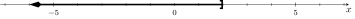
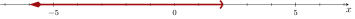
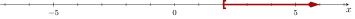

Section 1.3 Comparison Symbols and Notation for Intervals
Here is a true fact: \(8\) is larger than \(3\text{.}\) That is a comparison between two specific numbers. We can also make comparisons using an unspecified number, like if we say that average rent for an apartment in Portland, OR is more than $1700. We are not saying what the average rent is, just that it’s larger than $1700. In the first half of this section, we examine mathematical notation for making these kinds of comparisons.
In Oregon, only citizens \(18\) and older can vote in statewide elections. That is saying something about a large group of citizens, not just those who are \(18\text{.}\) It’s saying that people who are \(37\) and \(62\) may vote; and people who are \(12\) may not. So it’s a statement about a large collection of numbers. In the second half of this section, we examine the mathematical notation for large collections of numbers like this.
Subsection 1.3.1 Comparison Symbols
In everyday language you can say something like “\(8\) is larger than \(3\)”. In mathematical writing, we have a shorthand notation for this: “\(\gt\)”. It’s used as follows:
\begin{equation*}
8\gt3
\end{equation*}
That short expression is read aloud as “\(8\) is greater than \(3\)”. The symbol “\(\gt\)” is called the greater-than symbol.
Checkpoint 1.3.2.
- Use mathematical notation to write “\(11.5\) is greater than \(4.2\)”.
- Use mathematical notation to write “age is greater than \(20\)”.
Explanation.
- This is “\(11.5\gt4.2\)”.
- We can use the word
ageto represent age, and write \(\text{age}\gt20\text{.}\) Or we could use an abbreviation like \(a\) for age, and write \(a\gt20\text{.}\) Or we could use \(x\) as a generic variable, and write \(x\gt20\text{.}\)
Remark 1.3.3.
At some point in history, it was settled that “\(\gt\)” was a good symbol for “is greater than”. The tall side of the symbol is with the larger of the two numbers, and the small pointed side is with the smaller of the two numbers. One way to remember how this symbol works is to imagine it as an open mouth, and tell yourself that the mouth is hungry and it wants to eat the larger number.
We have to be careful when negative numbers are used in a comparison. Is \(-8\) greater or less than \(-3\text{?}\) In one sense \(-8\) is larger, because if you owe someone \(8\) dollars, that’s “more” than owing them \(3\) dollars. But the “\(\gt\)” symbol does not work that way. This symbol tells you which number is farther to the right on a number line. With that understanding, \(-3\) is greater than \(-8\text{.}\)
Checkpoint 1.3.5.
Use the \(\gt\) symbol to arrange the following numbers in order from greatest to least.
(a)
\({-7.6}\quad{6}\quad{-6}\quad{9.5}\quad{8}\)
Explanation.
We can order these numbers by placing these numbers on a number line.
And so we see the answer is \({9.5>8>6>-6>-7.6}\text{.}\)
(b)
\begin{equation*}
{-5.2}\quad{3.14159}\quad{{\frac{10}{3}}}\quad{4.6}\quad{8}
\end{equation*}
Explanation.
We can order these numbers by placing these numbers on a number line. Knowing or computing their decimals helps with this: \(\pi\approx3.141\ldots\) and \(\frac{10}{3}\approx3.333\ldots\text{.}\)
And so we see the answer is \({8>4.6>{\frac{10}{3}}>3.14159>-5.2}\text{.}\)
The greater-than symbol has a close relative: the greater-than-or-equal-to symbol “\(\geq\)”. It means just like it sounds; the left number is either greater than or equal to the right number. Consider these examples, five of which are true and one of which is false.
\begin{align*}
8\amp\geq3\amp3\amp\geq-8\amp3\amp\geq3\\
8\amp\gt3\amp3\amp\gt-8\amp3\amp\reject{\gt}3
\end{align*}
While it may seem unhelpful to write \(3\geq3\) when you could write \(3=3\text{,}\) the “\(\geq\)” symbol is useful when at least one of the numbers in a comparison is not specific, like in these examples:
\begin{align*}
(\text{hourly pay rate})\amp\geq(\text{minimum wage})\amp(\text{age of a voter})\amp\geq18
\end{align*}
Sometimes you want to emphasize that one number is less than another number. For this, we have symbols that are reversed from \(\gt\) and \(\geq\text{.}\) The symbol “\(\lt\)” is the less-than symbol and it’s used like this:
\begin{equation*}
3\lt8
\end{equation*}
and read aloud as “\(3\) is less than \(8\)”.
Table 6 gives the complete list of all six comparison symbols. We’ve only discussed three of them so far in this section, but you already know the equals symbol. The other two are the “less than or equal to” symbol, “\(\leq\)”, and the “not equal to” symbol, “\(\neq\)”.
| Symbol | Means | True | True | False |
| \(=\) | equals | \(13=13\) | \(\frac{5}{4}=1.25\) | \(5\reject{=}6\) |
| \(\gt\) | is greater than | \(13\gt11\) | \(\pi\gt3\) | \(9\reject{\gt}9\) |
| \(\geq\) | is greater than or equal to | \(13\geq11\) | \(3\geq3\) | \(10.2\reject{\geq}11.2\) |
| \(\lt\) | is less than | \(-3\lt8\) | \(\frac{1}{2}\lt\frac{2}{3}\) | \(2\reject{\lt}-2\) |
| \(\leq\) | is less than or equal to | \(-3\leq8\) | \(3\leq3\) | \(\frac{4}{5}\reject{\leq}\frac{3}{5}\) |
| \(\neq\) | is not equal to | \(10\neq20\) | \(\frac{1}{2}\neq1.2\) | \(\frac{3}{8}\reject{\neq}0.375\) |
Subsection 1.3.2 Set-Builder and Interval Notation
If you write
\begin{equation*}
(\text{age of a voter})\geq18
\end{equation*}
and have a particular voter in mind, what is that person’s age? Maybe they are \(18\text{,}\) but maybe they are older. It’s helpful to use a variable \(a\) to represent age (in years) and then to visualize the possibilities with a number line.
The shaded portion of the number line in Figure 7 is a mathematical interval. That means a collection of certain numbers with a “starting point” and a “ending point”. The interval above doesn’t really ever end, but we can say \(\infty\) (infinity) is the “ending point” in this situation. So this interval starts at \(18\) and “ends” at \(\infty\text{.}\)
The number line in Figure 7 is a visual representation of a collection of certain numbers. We have notations we can use to write down such collections of numbers.
Definition 1.3.8. Set-Builder Notation.
Set-builder notation attempts to say directly what condition needs to be met by numbers in the interval. We write set-builder notation like:
\begin{equation*}
\left\{x\mid\text{condition on }x\right\}
\end{equation*}
and read it aloud as “the set of all \(x\) such that …”.
For example, \(\left\{x\mid x\geq18\right\}\) is read aloud as “the set of all \(x\) such that \(x\) is greater than or equal to \(18\)”. The breakdown is as follows.
| \(\highlight{\{}x\mid x\geq18\highlight{\}}\) | the set of |
| \(\{\highlight{x}\mid x\geq18\}\) | all \(x\) |
| \(\{x\highlight{{}\mid{}}x\geq18\}\) | such that |
| \(\{x\mid\highlight{x\geq18}\}\) | \(x\) is greater than or equal to \(18\) |
Example 1.3.9.
The set of all positive numbers is \(\{x\mid x\gt0\}\text{,}\) but the set of all non-negative numbers is \(\{x\mid x\geq0\}\text{.}\)
The set of all possible Celsius temperatures for liquid water is \(\{x\mid x\gt0\text{ and }x\lt100\}\text{.}\)
Checkpoint 1.3.10.
For each interval expressed in the number lines, write the interval using set-builder notation.
(a)

Explanation.
Since all numbers less than or equal to \(2\) are shaded, the set-builder notation is \({\{ x \mid x \le 2 \}}\text{.}\)
(b)

Explanation.
Since all numbers less than to \(2\) are shaded, the set-builder notation is \({\{ x \mid x \lt 2 \}}\text{.}\)
(c)

Explanation.
Since all numbers greater than or equal to \(2\) are shaded, the set-builder notation is \({\{ x \mid x \ge 2 \}}\text{.}\)
Set-builder notation is useful, but there is an alternative for intervals that is less cumbersome.
Definition 1.3.11. Interval Notation.
Interval notation describes an interval by saying where it “starts” and “ends”. It can look like any of these four options:
\begin{equation*}
(\text{start},\text{end})\qquad
(\text{start},\text{end}]\qquad
[\text{start},\text{end})\qquad
[\text{start},\text{end}]
\end{equation*}
In Figure 7, the interval starts at \(18\text{.}\) Then it extends forever and has no end, so we use the \(\infty\) symbol for where this interval “ends”. And we write \([18,\infty)\text{.}\) There is a subtlety about using the bracket “\([\)” on one side and the parenthesis “\()\)” on the other side. The bracket tells us that \(18\) is part of the interval and the parenthesis tells us that \(\infty\) is not part of the interval.
Imagine if we wanted to describe all the numbers greater than \(18\text{,}\) including numbers like \(18.01\) but not including \(18\) itself. Then we would write \((18,\infty)\text{.}\)
So there are four types of infinite intervals. Take note of the different uses of round parentheses and square brackets.
\((a,\infty)\)
An open-infinite interval means all numbers \(a\) or greater, not including \(a\text{.}\)
\([a,\infty)\)
A closed-infinite interval means all numbers \(a\) or greater, including \(a\text{.}\)
\((-\infty,a)\)
An infinite-open interval means all numbers \(a\) or less, not including \(a\text{.}\)
\((-\infty,a]\)
A infinite-closed interval means all numbers \(a\) or less, including \(a\text{.}\)
Checkpoint 1.3.13. Interval Notation from Number Lines.
For each interval expressed in the number lines, write the interval notation.
(a)

Explanation.
The shaded interval “starts” at \(-\infty\) and ends at \(2\) (including \(2\)) so the interval notation is \({\left(-\infty ,2\right]}\text{.}\)
(b)

Explanation.
The shaded interval “starts” at \(-\infty\) and ends at \(2\) (excluding \(2\)) so the interval notation is \({\left(-\infty ,2\right)}\text{.}\)
(c)

Explanation.
The shaded interval starts at \(2\) (including \(2\)) and “ends” at \(\infty\text{,}\) so the interval notation is \({\left[2,\infty \right)}\text{.}\)
Remark 1.3.14. Alternative Convention for Sketching Intervals.
When graphing an interval, there is an alternative convention than you might see in other resources explaining algebra. This other convention uses open circles and filled-in circles. An open circle is used in place of a parenthesis, and a filled-in circle is used in place of a bracket, as in this example for the interval \([a,b)\text{.}\)
Reading Questions 1.3.3 Reading Questions
1.
How many inequality symbols are there?
2.
What is the difference between the interval \([3,\infty)\) and the interval \((3,\infty)\text{?}\)
3.
The expression \(\{x\mid x\leq10\}\) is an example of notation.
Exercises 1.3.4 Exercises
Prerequisite/Review Skills
These exercises are only intended for students who are rusty with converting fractions to decimals. If you feel comfortable, proceed to Skills Practice.
Fractions to Decimals.
Without help from a calculator, convert the fraction to a decimal. If the decimal terminates, give its exact value. Otherwise round to at least three significant digits.
1.
\(\dfrac{11}{5}\)
2.
\(\dfrac{14}{5}\)
3.
\(\dfrac{29}{4}\)
4.
\(\dfrac{33}{4}\)
5.
\(\dfrac{39}{8}\)
6.
\(\dfrac{45}{8}\)
7.
\(\dfrac{1}{20}\)
8.
\(\dfrac{9}{20}\)
9.
\(\dfrac{10}{3}\)
10.
\(\dfrac{13}{3}\)
11.
\(\dfrac{35}{6}\)
12.
\(\dfrac{43}{6}\)
13.
\(\dfrac{17}{11}\)
14.
\(\dfrac{26}{11}\)
15.
\(\dfrac{55}{12}\)
16.
\(\dfrac{4}{9}\)
Skills Practice
True or False?.
Decide if each comparison is true or false.
17.
\(-85 > -54\)
18.
\(-75 \leq -90\)
19.
\(-9.64 \geq -9.25\)
20.
\(-9.53 \lt -9.6\)
21.
\({{\frac{7}{6}}} \leq {{\frac{1}{2}}}\)
22.
\({{\frac{13}{7}}} \lt {{\frac{11}{6}}}\)
23.
\({{\frac{37}{50}}} \leq {0.74}\)
24.
\({0.035} \leq {{\frac{7}{200}}}\)
25.
\({{\frac{3}{2}}} \leq {1.5}\)
26.
\({0.75} \leq {{\frac{3}{4}}}\)
Compare Two Numbers.
Decide if one given number is greater than, less than, or equal to another given number.
27.
\(-9.75\) \(-9.03\)
28.
\(-9.64\) \(-9.37\)
29.
\({{\frac{9}{5}}}\) \({{\frac{5}{3}}}\)
30.
\({{\frac{5}{6}}}\) \({{\frac{11}{9}}}\)
31.
\({-{\frac{10}{7}}}\) \({-{\frac{5}{6}}}\)
32.
\({-{\frac{3}{8}}}\) \({-{\frac{1}{3}}}\)
33.
\({1.78}\) \({{\frac{89}{50}}}\)
34.
\({1.25}\) \({{\frac{5}{4}}}\)
35.
\({{\frac{1}{6}}}\) \({0.17}\)
36.
\({1.83}\) \({{\frac{11}{6}}}\)
Ordering Numbers.
Use the \(\gt\) symbol to arrange the following numbers in order from greatest to least. For example, your answer might look like \(4 \gt 3 \gt 2 \gt 1 \gt 0\text{.}\)
37.
\({-3}\quad{0}\quad{-6}\quad{6}\quad{9}\)
38.
\({-1}\quad{-8}\quad{4}\quad{0}\quad{9}\)
39.
\({-4.9}\enspace{-5.8}\enspace{8.9}\enspace{-0.7}\enspace{1.8}\)
40.
\({8.9}\enspace{-7.9}\enspace{-6.9}\enspace{8.7}\enspace{4.8}\)
41.
\({{\frac{11}{8}}}\quad{{\frac{1}{2}}}\quad{{\frac{2}{9}}}\quad{{\frac{7}{6}}}\quad{{\frac{10}{7}}}\)
42.
\({{\frac{4}{9}}}\quad{{\frac{3}{7}}}\quad{{\frac{4}{3}}}\quad{{\frac{7}{4}}}\quad{{\frac{3}{8}}}\)
43.
\({\sqrt{3}}\quad{0.3}\quad{{\frac{8}{13}}}\quad{\frac{\pi }{4}}\quad{5}\)
44.
\({{\frac{2}{3}}}\quad{\frac{\pi }{2}}\quad{1.3}\quad{{\frac{4}{7}}}\quad{\sqrt{5}}\)
Interval on a Number Line.
Express the given interval in set-builder notation and interval notation.
45.
46.
47.
48.
49.
50.
51.
52.
Interval in Set-Builder Notation.
Convert the given set-builder notation into a number line graph and interval notation.
53.
\({\{ x \mid x \ge -6 \}}\)
54.
\({\{ x \mid x \ge -4 \}}\)
55.
\({\{ x \mid x \lt -2 \}}\)
56.
\({\{ x \mid x \lt -1 \}}\)
57.
\({\{ x \mid x \le 1 \}}\)
58.
\({\{ x \mid x \le 3 \}}\)
59.
\({\{ x \mid x > 4 \}}\)
60.
\({\{ x \mid x > 6 \}}\)
Interval in Interval Notation.
Convert the given interval notation into a number line graph and set-builder notation.
61.
\({\left[-7,\infty \right)}\)
62.
\({\left[-6,\infty \right)}\)
63.
\({\left(-4,\infty \right)}\)
64.
\({\left(-2,\infty \right)}\)
65.
\({\left(-\infty ,-1\right)}\)
66.
\({\left(-\infty ,1\right)}\)
67.
\({\left(-\infty ,3\right]}\)
68.
\({\left(-\infty ,4\right]}\)
Applications
69.
In most US states, you must be at least 21 years old to rent a car. Write an interval for the age \(a\) of someone who could legally rent a car.
70.
In a battery, the negatively charged terminal is called the “anode”. Write an interval for the charge \(C\) that could be present on an anode.
71.
A bank offers a higher interest rate on an account if the initial deposit is at least \(\$5000\text{.}\) Write an interval for the initial deposit \(d\) that could trigger the higher rate.
72.
The world record for the women’s hammer throw is held by Anita Włodarczyk, who threw 82.98 m. Write an interval for the distance \(d\) of a throw that could beat her record.
pH Level.
A water-based liquid has a “pH” level. At room temperature, if the pH level is less than \(7\text{,}\) then the liquid is a “base”. If it is greater than \(7\text{,}\) then the liquid is an “acid”.
73.
Write an interval for the pH level of a base.
74.
Write an interval for the pH level of an acid.
Challenge
75.
Choose the correct inequality or equal sign to make the relation true.
-
Let \(x\) and \(y\) be integers such that \(x \lt y\text{.}\)Then \(x - y\) \(y - x\text{.}\)
-
Let \(x\) and \(y\) be integers, such that \(1 \lt x \lt y\text{.}\)Then \(xy\) \(x + y\text{.}\)
-
Let \(x\) and \(y\) be fractions such that \(0 \lt x \lt y \lt 1\text{.}\)Then \(xy\) \(x + y\text{.}\)
-
Let \(x\) and \(y\) be integers, such that \(x \lt y\text{.}\)Then \(x + 2y\) \(2x + y\text{.}\)